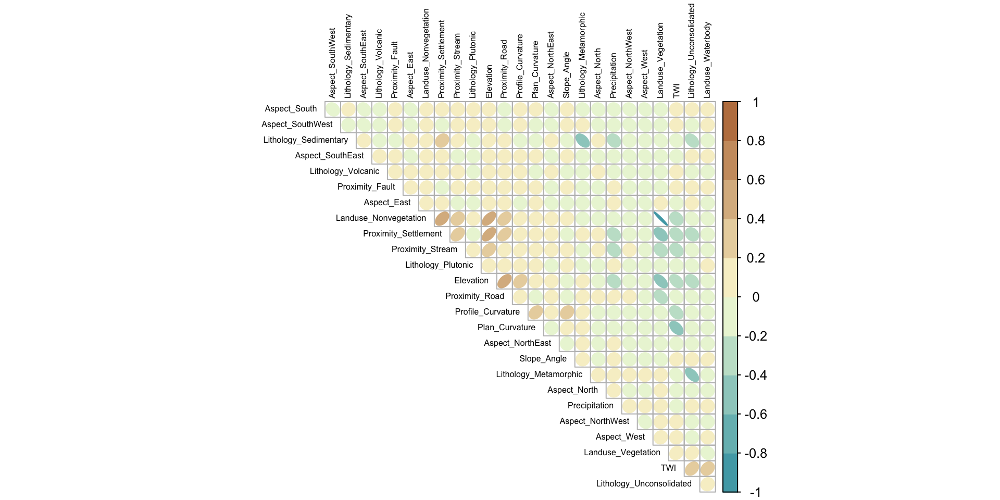
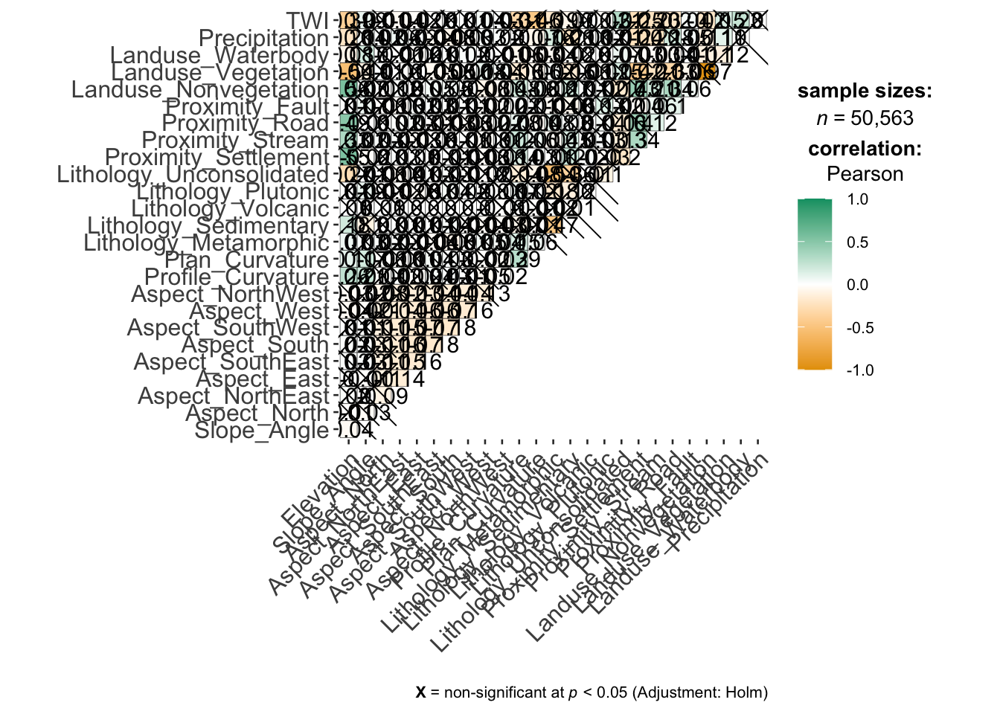

pacman::p_load(sf, st, raster, spatstat, tmap, devtools,vtable,ggplot2,egg, corrplot, patchwork, ggstats, ggstatsplot)Landslide Susceptibility Model Development
R
sf
gwmodel
To develop a landslide susceptibility methodology framework, we will explore and calibrate different statistical and machine learning models.
Import Data
train_grids <- read.csv("~/IS485-Landslide/data/aspatial/train_grid.csv")length <- length(train_grids)
length[1] 31names(train_grids) [1] "Train_ID" "Grid_ID"
[3] "X" "Y"
[5] "Landslide" "Elevation"
[7] "Slope_Angle" "Aspect_North"
[9] "Aspect_NorthEast" "Aspect_East"
[11] "Aspect_SouthEast" "Aspect_South"
[13] "Aspect_SouthWest" "Aspect_West"
[15] "Aspect_NorthWest" "Profile_Curvature"
[17] "Plan_Curvature" "Lithology_Metamorphic"
[19] "Lithology_Sedimentary" "Lithology_Volcanic"
[21] "Lithology_Plutonic" "Lithology_Unconsolidated"
[23] "Proximity_Settlement" "Proximity_Stream"
[25] "Proximity_Road" "Proximity_Fault"
[27] "Landuse_Nonvegetation" "Landuse_Vegetation"
[29] "Landuse_Waterbody" "Precipitation"
[31] "TWI" train_grids.sf <- st_as_sf(train_grids,
coords = c("X", "Y"))Exploratory Spatial Data Analysis (ESDA)
To calculate the summary statistics of landslide_train data frame, we use st().
st(train_grids)| Variable | N | Mean | Std. Dev. | Min | Pctl. 25 | Pctl. 75 | Max |
|---|---|---|---|---|---|---|---|
| Train_ID | 50563 | 25282 | 14596 | 1 | 12642 | 37922 | 50563 |
| Grid_ID | 50563 | 7258576 | 4280699 | 154 | 3455206 | 11141722 | 14724829 |
| X | 50563 | 573312 | 27325 | 519097 | 550687 | 594547 | 624487 |
| Y | 50563 | 5129116 | 17040 | 5095541 | 5115266 | 5143076 | 5164991 |
| Landslide | 50563 | 0.83 | 0.38 | 0 | 1 | 1 | 1 |
| Elevation | 50563 | 1913 | 677 | 0 | 1509 | 2420 | 3924 |
| Slope_Angle | 50563 | 42 | 24 | 0 | 27 | 48 | 90 |
| Aspect_North | 50563 | 0.061 | 0.24 | 0 | 0 | 0 | 1 |
| Aspect_NorthEast | 50563 | 0.12 | 0.32 | 0 | 0 | 0 | 1 |
| Aspect_East | 50563 | 0.14 | 0.34 | 0 | 0 | 0 | 1 |
| Aspect_SouthEast | 50563 | 0.15 | 0.35 | 0 | 0 | 0 | 1 |
| Aspect_South | 50563 | 0.16 | 0.36 | 0 | 0 | 0 | 1 |
| Aspect_SouthWest | 50563 | 0.15 | 0.36 | 0 | 0 | 0 | 1 |
| Aspect_West | 50563 | 0.13 | 0.34 | 0 | 0 | 0 | 1 |
| Aspect_NorthWest | 50563 | 0.099 | 0.3 | 0 | 0 | 0 | 1 |
| Profile_Curvature | 50563 | -0.00043 | 0.0012 | -0.0066 | -0.0011 | 0.00022 | 0.0079 |
| Plan_Curvature | 50563 | -0.00019 | 0.0011 | -0.0056 | -0.00071 | 0.00032 | 0.0068 |
| Lithology_Metamorphic | 50563 | 0.42 | 0.49 | 0 | 0 | 1 | 1 |
| Lithology_Sedimentary | 50563 | 0.24 | 0.42 | 0 | 0 | 0 | 1 |
| Lithology_Volcanic | 50563 | 0.00032 | 0.018 | 0 | 0 | 0 | 1 |
| Lithology_Plutonic | 50563 | 0.057 | 0.23 | 0 | 0 | 0 | 1 |
| Lithology_Unconsolidated | 50563 | 0.29 | 0.45 | 0 | 0 | 1 | 1 |
| Proximity_Settlement | 50563 | 904 | 764 | 0 | 328 | 1288 | 5600 |
| Proximity_Stream | 50563 | 12 | 12 | 0 | 3.1 | 17 | 97 |
| Proximity_Road | 50563 | 26 | 22 | 0 | 6.3 | 40 | 125 |
| Proximity_Fault | 50563 | 828 | 1032 | 0 | 199 | 1012 | 7746 |
| Landuse_Nonvegetation | 50563 | 0.48 | 0.5 | 0 | 0 | 1 | 1 |
| Landuse_Vegetation | 50563 | 0.51 | 0.5 | 0 | 0 | 1 | 1 |
| Landuse_Waterbody | 50563 | 0.014 | 0.12 | 0 | 0 | 0 | 1 |
| Precipitation | 50563 | 0.15 | 0.048 | 0 | 0.13 | 0.17 | 0.29 |
| TWI | 50563 | 7.5 | 2.3 | 3.7 | 6 | 8.3 | 23 |
Next, we will create atrellis plot by using ggarrange() of ggpubr package. In this way, we can see the distribution plots of different parameters at the same time.
Elevation <- ggplot(data=train_grids, aes(x= `Elevation`)) +
geom_histogram(bins=7, color="black", fill="#e9531e")
Slope_Angle <- ggplot(data=train_grids, aes(x= `Slope_Angle`)) +
geom_histogram(bins=7, color="black", fill="#e9531e")
Profile_Curvature <- ggplot(data=train_grids, aes(x= `Profile_Curvature`)) +
geom_histogram(bins=7, color="black", fill="#DC375E")
Plan_Curvature <- ggplot(data=train_grids, aes(x= `Plan_Curvature`)) +
geom_histogram(bins=7, color="black", fill="#DC375E")
Proximity_Settlement <- ggplot(data=train_grids,
aes(x= `Proximity_Settlement`)) +
geom_histogram(bins=7, color="black", fill="#c4102c")
Proximity_Stream <- ggplot(data=train_grids, aes(x= `Proximity_Stream`)) +
geom_histogram(bins=7, color="black", fill="#c4102c")
Proximity_Road <- ggplot(data=train_grids, aes(x= `Proximity_Road`)) +
geom_histogram(bins=7, color="black", fill="#AE4285")
Proximity_Fault <- ggplot(data=train_grids, aes(x= `Proximity_Fault`)) +
geom_histogram(bins=7, color="black", fill="#AE4285")
Precipitation <- ggplot(data=train_grids, aes(x= `Precipitation`)) +
geom_histogram(bins=7, color="black", fill="#71508F")
TWI <- ggplot(data=train_grids, aes(x= `TWI`)) +
geom_histogram(bins=7, color="black", fill="#71508F")
ggarrange(Elevation,Slope_Angle,Profile_Curvature,Plan_Curvature,Proximity_Settlement,Proximity_Stream,Proximity_Road,Proximity_Fault,Precipitation,TWI,
ncol = 4, nrow = 3)adding dummy grobs
Inflation Variance Test
Correlation Matrix
Before building a multinomial logistic regression model, it is important to ensure that the indepdent variables used are not highly correlated to each other. If these highly correlated independent variables are used in building a regression model by mistake, the quality of the model will be compromised. This phenomenon is known as multicollinearity in statistics.
Correlation matrix is commonly used to visualise the relationships between the independent variables. In this section, the corrplot package will be used to display the correlation matrix of the independent variables in condo_resale data frame.
corrplot(cor(train_grids[, 6:31]), diag = FALSE, order = "AOE",
col=colorRampPalette(c("#50a8b4","#e4c838","#be804f"))(10),
tl.pos = "td", tl.cex = 0.5,tl.col = "black", number.cex = 0.5, method = "number", type = "upper")
corrplot(cor(train_grids[,6:31]), diag = FALSE, order = "AOE",
col=colorRampPalette(c("#50a8b4","#ffffdd","#be804f"))(10),
tl.pos = "td", tl.cex = 0.5,tl.col = "black", number.cex = 0.5, method = "ellipse", type = "upper")
Using ggstats method
set.seed(123)
## producing the correlation matrix
ggcorrmat(
data = train_grids[, 6:31],
matrix.type = "upper",
type = "parametric",
tr = 0.2,
tl.cex = 0.1,
partial = FALSE,
k = 2L,
sig.level = 0.05,
conf.level = 0.95,
bf.prior = 0.707)
Logistic Regression
set.seed(123)
sample <- sample(c(TRUE, FALSE), nrow(default), replace = T, prob = c(0.6,0.4))
train <- default[sample, ]
test <- default[!sample, ]Simple Logistic Regression
We will fit a logistic regression model in order to predict the probability of a customer defaulting based on the average balance carried by the customer. The glm function fits generalized linear models, a class of models that includes logistic regression. The syntax of the glm function is similar to that of lm, except that we must pass the argument family = binomial in order to tell R to run a logistic regression rather than some other type of generalized linear model.
logit_model <- glm(landslide ~ ., family = "binomial", data = landslide_train)Emerging Hot Spot Analysis
pacman::p_load(sd,tmap,spdep,spData)
coords <- cbind(longitude, latitude)The function knearneigh returns a matrix with the indices of points belonging to the set of the k nearest neighbours of each other.
The function knn2nb converts a knn object returned by knearneigh into a neighbours list of class nb with a list of integer vectors containing neighbour region number ids.
The function nbdists returns the Euclidean distances along the spatial neighbour links in a list.
k1 <- knn2nb(knearneigh(coords))
k1dists <- unlist(nbdists(k1, coords, longlat = TRUE))
summary(k1dists)Computing fixed distance weight matrix
weight_matrix <- dnearneigh(coords, 0, 106, longlat = TRUE)
weight_matrixSpatial Neighbourhood
Create Neighbourhood Matrix using Queen
nb <- spdep::poly2nb(landslide_train, queen = TRUE)
head(nb)
plot(st_geometry(landslide_train), border = "lightgray")
plot.nb(nb, st_geometry(landslide_train), add = TRUE)Create a demo visual of how spatial neighbourhood works
id <- 20 # custom area id
landslide_train$neighbors <- "other"
landslide_train$neighbors[id] <- "point of interest"
landslide_train$neighbors[nb[[id]]] <- "neighbours"
ggplot(landslide_train) + geom_sf(aes(fill = neighbors)) + theme_bw() +
scale_fill_manual(values = c("gray30", "gray", "white"))The function nb2listw() of the spdep package can be used to construct a spatial neighborhood matrix containing the spatial weights corresponding to a neighbors list. The neighbors can be binary or based on inverse distance values.
spatial_w_matrix <- listw2mat(nbw)We can visualize the spatial weight matrix by creating a matrix with the weights with listw2mat(), and using lattice::levelplot() to create the plot
lattice::levelplot(t(m1),
scales = list(y = list(at = c(10, 20, 30, 40),
labels = c(10, 20, 30, 40))))